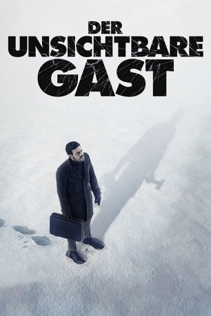
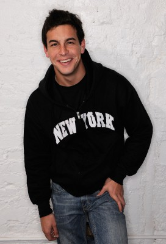
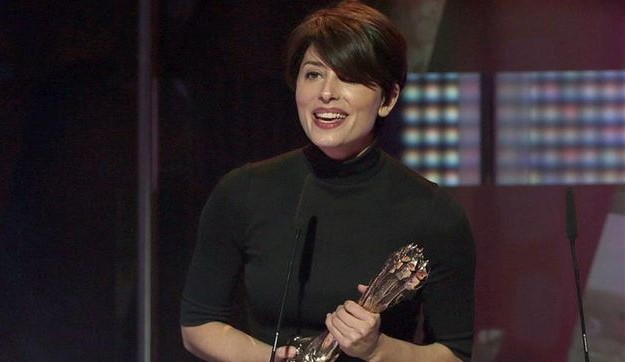

#7698 Der Unsichtbare Gast
 
 IMDB-Wertung: 8.1 / 10
IMDB-Wertung: 8.1 / 10  Metascore: 0
Metascore: 0 
Ein verschlossener Raum, eine Leiche und ein dringend Tatverdächtiger: Der erfolgreiche Geschäftsmann Adrián Doria, gleichzeitig der Liebhaber der Toten. Frau und Tochter hat er in der Folge bereits verloren, ebenfalls den Kampf um die öffentliche Meinung. Bis die Anwältin Virginia Goodman an seine Tür klopft – mit neuem Zeugen und neuen Fragen im Gepäck. Der Beginn eines nervenaufreibenden Katz- und Mausspiels, in dessen Verlauf die Geschichte von Adrián immer neue Löcher, aber auch immer neue, atemberaubende Wendungen erhält
Jahr: 2016
Dauer: 106 Minuten
FSK: 16
Land: Spanien Studio: Koch MediaTonspuren: DTS - ,
Untertitel: Deutsch,
Auflösung: 1080p (1920x800) Größe: 4587 MB
Genre: Thriller, Krimi, Mystery
Regisseur: Oriol Paulo
Drehbuch: Oriol Paulo
Soundtrack: Fernando Velázquez, Zahara
Darsteller:
-  Mario Casas als Adrián Doria
 Ana Wagener als Virginia Goodman
Ana Wagener als Virginia Goodman José Coronado als Tomás Garrido
José Coronado als Tomás Garrido-  Bárbara Lennie als Laura Vidal
 Francesc Orella als
Francesc Orella als - Annick Weerts als
- Cristian Valencia als
- Paco Tous als
- David Selvas als
- Iñigo Gastesi als
- San Yélamos als
- Manel Dueso als
- Blanca Martínez als
- Pere Brasó als
- Jordi Brunet als
- Bobby Gonzalez als
- Martina Hurtado als
- Ruth Llopis als
- Jordi Llordella als
- Laia Alberch als
- Betsy Túrnez als
- Sandra Golpe als
- Susana Molina als
- Helena Resano als Alina Constanso
Datei: X:\2016(N-Z)\Unsichtbare Gast, Der (2016, FSK16, 1920x800).mkv seit 04.12.2017
Festplatte: HD 2016(A-Z)
 Es gibt insgesamt 182 Filme in der Gruppe '2016(N-Z)'
Es gibt insgesamt 182 Filme in der Gruppe '2016(N-Z)'